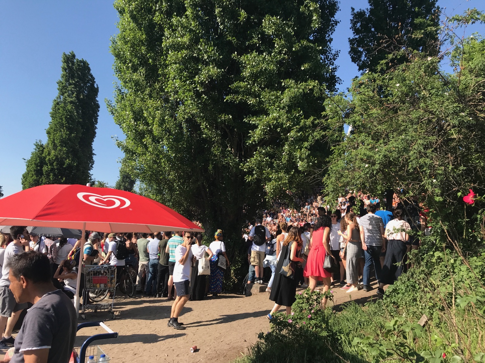
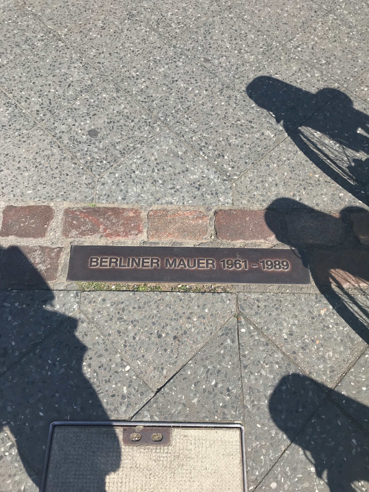
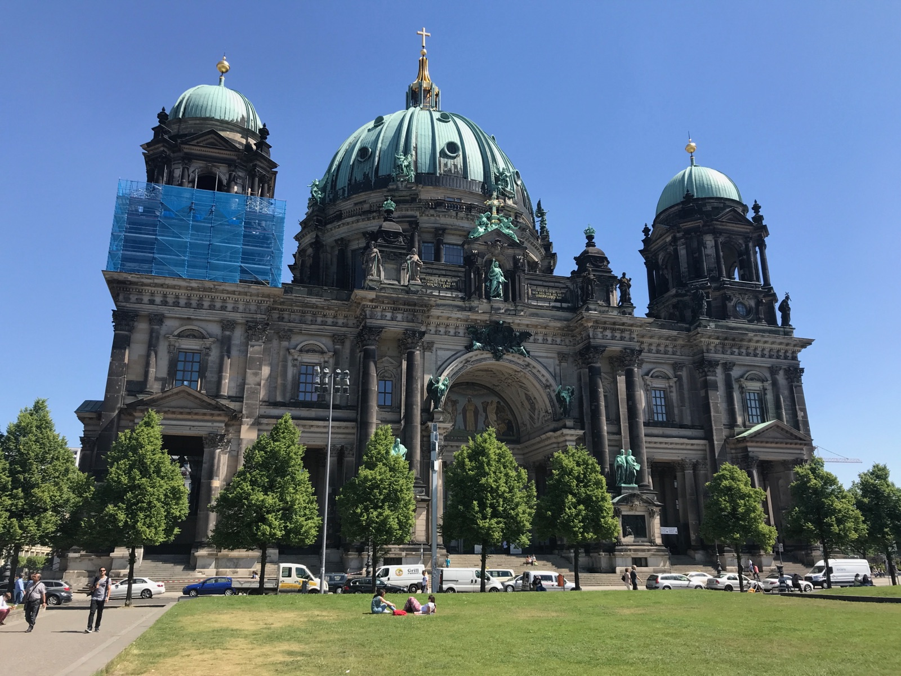
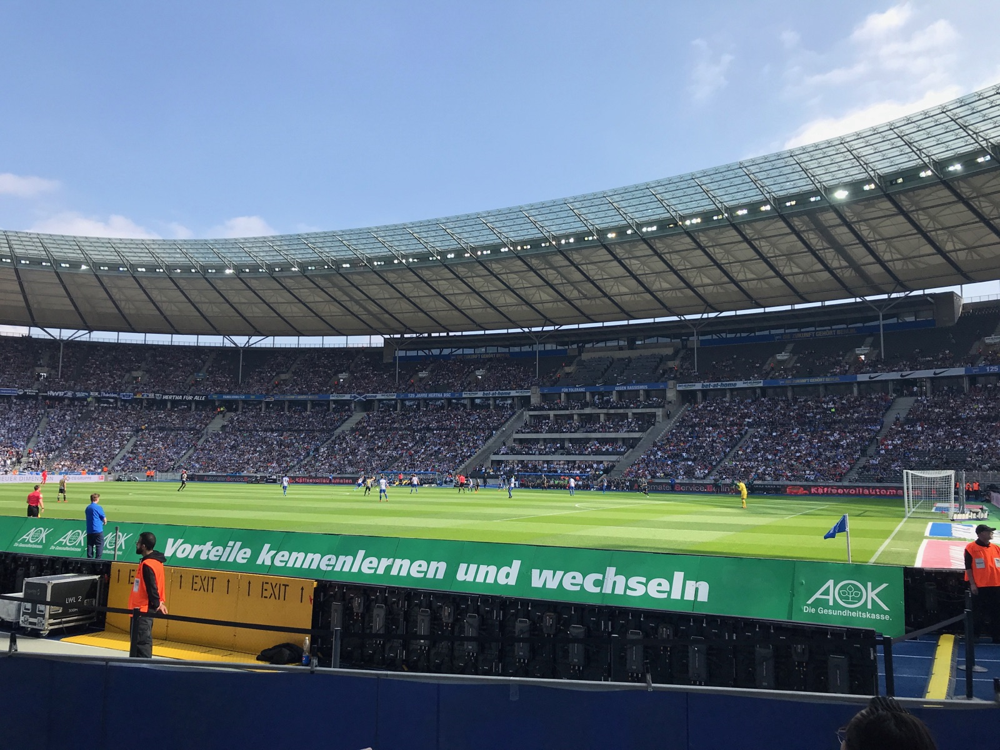
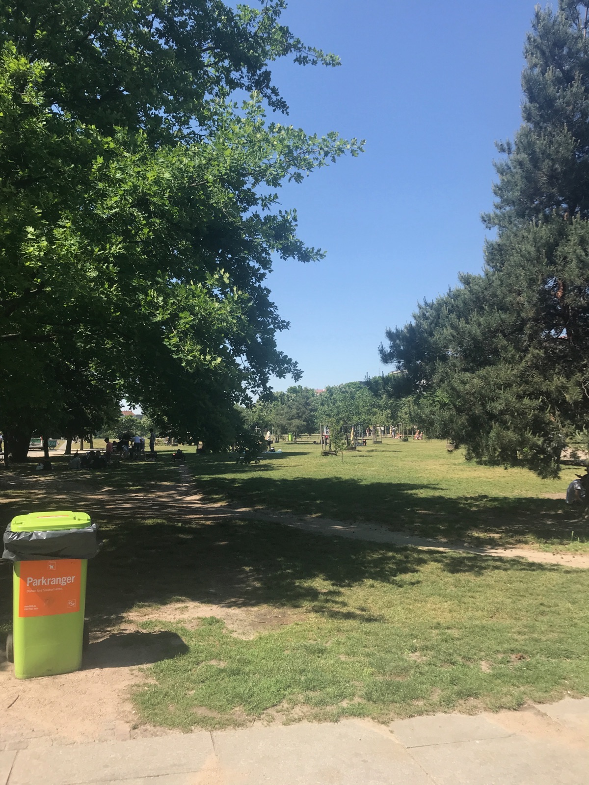

Reliable Hilton property in western Berlin with complimentary breakfast, close to Kurfürstendamm shopping and well-connected by U-Bahn to all central sights.
Alnatura — organic market, many naturally GF items
Naturally Gluten-Free
Bratwurst (not breaded) — confirm preparation
Kartoffelsalat (potato salad)
Sauerkraut
Grilled meats without marinade
Berlin-Specific
Berlin's strong vegan scene means more GF-friendly options than most German cities. Brotquelle near the Eastside Gallery is another 100% GF bakery worth seeking out. EU allergen labeling has been required since 2014. Download the DZG (German Celiac Society) app for certified products.
Score Breakdown
Dedicated GF restaurants
Menu labeling
Staff knowledge & safety
Density of GF dining
Grocery availability
7/10Overall GF Score
GF Friendly
GF Friendly Restaurants
9 spots
GF Score 5/5 4/5 3/5 2/5 1/5 Hotel
Simela Finest Food
GF Options
Italian / Pizza
Went here
GF Score
Safety Notes
GF pizza with buckwheat crust, cute family-owned spot. Separate kitchen and oven for gluten-free preparation.
Artisanal ice cream. Check individual flavors for GF status — many are naturally gluten-free but watch for cookie/brownie mix-ins.
Location
Prenzlauer Berg
Brammibal’s Donuts (Maybachufer)
GF Options
Vegan Bakery
Traveler recommended
GF Score
Safety Notes
Cross-contamination with GF donuts noted. Has vegan donuts but not reliably safe for celiacs. Proceed with caution.
Location
Kreuzberg
Landmarks & Must-See Spots
12 spots
Mauerpark
Market
Flea market, karaoke, beer garden. Open karaoke starts at 3pm on Sundays — amazing atmosphere. Really fun, hipster vibe with drinks and food at the flea market.
Prenzlauer Berg
Went here

Berlin Wall
Historic
Remnants of the wall that divided Berlin from 1961 to 1989. The East Side Gallery stretches 1.3 km along the Spree, covered in murals by international artists.
Friedrichshain
Berlin Wall Memorial
Historic
The main memorial site for the division of Berlin, with a preserved section of the wall, watchtower, and documentation center on Bernauer Straße.
Mitte
Checkpoint Charlie
Historic
The most famous Berlin Wall crossing point between East and West Berlin during the Cold War. Now a tourist landmark with a small museum.
Mitte

Memorial to the Murdered Jews of Europe
Historic
2,711 concrete stelae of varying heights covering 19,000 square meters. A powerful, disorienting memorial designed by Peter Eisenman.
Mitte
Reichstag Building
Historic
Home of the German Parliament (Bundestag). The Norman Foster glass dome offers panoramic views — book free rooftop visits in advance.
Mitte
Berliner Fernsehturm
Historic
Berlin's iconic TV Tower at Alexanderplatz. At 368 meters, it's the tallest structure in Germany with an observation deck and revolving restaurant.
Mitte · Alexanderplatz
Berlin Cathedral
Historic
Stunning Renaissance-era cathedral on Museum Island with a massive dome. Climb to the top for views over central Berlin.
Mitte · Museum Island

Teufelsberg
Historic
Abandoned Cold War-era NSA listening station built on a man-made hill of WWII rubble. Now covered in street art. Guided tours available.
Grunewald · Western Berlin
Olympiastadion Berlin
Historic
Built for the 1936 Olympics, now home to Hertha Berlin. Tours available to explore the historic stadium and its impressive architecture.
Charlottenburg · Western Berlin

Görlitzer Park
Nature
Graffiti-covered park in Kreuzberg with people playing music — a hub of the bohemian scene. Avoid at night.
Kreuzberg

Markthalle Neun
Market
Historic food market hall in Kreuzberg. Street Food Thursday is the main event — local vendors, craft beer, and international flavors.
Kreuzberg
Neighborhoods
Mitte
Historic & central
The historic center of Berlin. Brandenburg Gate, Reichstag, Museum Island, and the TV Tower are all here. Where most first-time visitors spend their time.
Charlottenburg
Upscale & quieter
Western Berlin's refined district. Charlottenburg Palace, KaDeWe department store, and Kurfürstendamm shopping boulevard. Where we stayed — quieter, well-connected by U-Bahn.
Kreuzberg
Bohemian & edgy
The bohemian heart of Berlin. Street art, nightlife, multicultural food scene, and Görlitzer Park. Markthalle Neun's Street Food Thursday is a highlight.
Friedrichshain
East Berlin & artsy
Former East Berlin district. Home to the East Side Gallery (longest remaining stretch of the Berlin Wall), RAW-Gelände market, and a thriving nightlife scene.
Prenzlauer Berg
Cafes & flea markets
Boutiques, cafés, and the famous Mauerpark flea market on Sundays. A gentrified former East Berlin neighborhood with a young, family-friendly vibe.
Things to Do
Tours & Activities
Fat Tire Tours Berlin
Guided Tour
HIGHLY recommend — you get to see a lot of cool spots and hear great stories. Covers the Berlin Wall, Holocaust Memorial, and more by bike.
Berlin's underground metro. Extensive network covering all central neighborhoods.
AB ticket €4.00
S-Bahn
Overground rail connecting outer districts. Same ticket as U-Bahn. 24-hour service on Friday and Saturday nights.
Tram
Runs mainly in eastern Berlin (Mitte, Prenzlauer Berg, Friedrichshain). Good for short hops between neighborhoods.
Bike
Berlin is very bike-friendly with dedicated lanes. Nextbike rentals available throughout the city.
Nextbike €1/15min
Validate Your Ticket
Get an AB zone ticket for all central sights. You must validate at the yellow or red boxes before boarding — inspectors do random checks and the fine is €60.
What to Pack
May in Berlin
Celiac dining card in GermanA printed card explaining celiac disease and cross-contamination in German. Essential for communicating with kitchen staff.
Essential
Portable phone chargerLong days of sightseeing and navigation drain your battery fast.
Essential
Comfortable walking shoesBerlin is very spread out. Even with transit, you'll cover serious ground on foot.
Essential
Reusable water bottleBerlin tap water is safe to drink. Stay hydrated on long walking days.
Essential
GF snack barsBerlin's street food scene is big but limited for celiacs. Carry backup snacks.
Essential
EU power adapter (Type C/F)Germany uses standard European two-pin plugs.
Germany
GF soy sauce packetsUseful for sushi restaurants and Asian food. Regular soy sauce contains wheat.
Germany
Light layersMay weather in Berlin ranges from cool mornings to warm afternoons.
Berlin
Rain jacketSpring showers are common. A packable rain jacket saves the day.
Berlin
SunglassesMay brings long sunny days in Berlin. Useful for outdoor sightseeing and flea markets.
Berlin
Crossbody bagPickpocket awareness — keep valuables secure, especially at flea markets and on transit.
Berlin
Travel Tips
Book Fat Tire Tours in advance — they sell out, especially in peak season.
Mauerpark flea market is a must on Sundays. The open karaoke starts at 3pm and the atmosphere is amazing.
Berlin is very spread out — the U-Bahn and S-Bahn are essential. Don't try to walk between neighborhoods.
Avoid Görlitzer Park at night. It's fine during the day for the vibe but gets sketchy after dark.
The street food scene is big but limited for celiacs — stick to the rated restaurants and carry snacks as backup.
What I'd Do Differently
Would have spent more time in Kreuzberg exploring the street art scene.
Would have tried Brotquelle bakery near the Eastside Gallery — another 100% GF bakery I missed.
Have a tip or comment?
Found a great GF spot in Berlin? I'd love to hear from you.